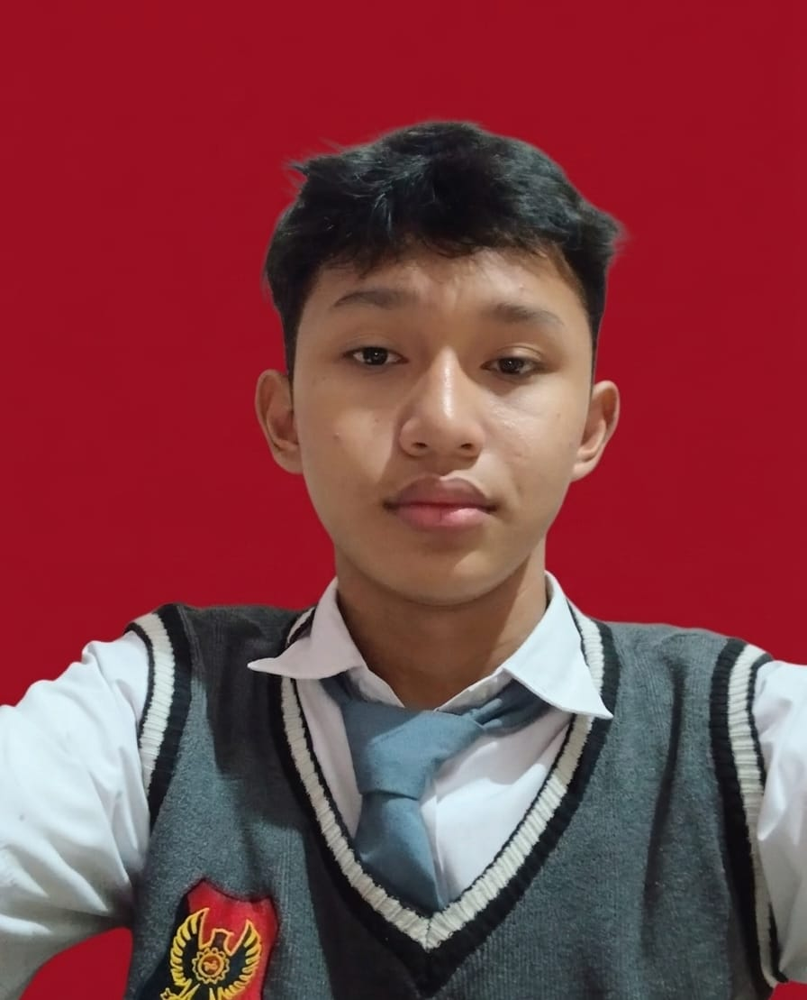

Tersedia untuk magang & proyek
Siswa jurusan Rekayasa Perangkat Lunak di SMK Poncol yang sedang membangun fondasi sebagai front-end developer — belajar merapikan antarmuka, menulis kode yang bisa dibaca orang lain, dan menyelesaikan proyek dari nol sampai jadi.
Sedikit cerita tentang latar belakang dan cara saya belajar membangun sesuatu di web.
Saya Neil, siswa jurusan Rekayasa Perangkat Lunak (RPL) di SMK Poncol. Di sekolah, saya belajar dari dasar pemrograman, basis data, sampai membangun aplikasi web sederhana dari sisi tampilan hingga logikanya.
Saya tertarik pada sisi front-end — bagaimana sebuah halaman terasa rapi, mudah dipakai, dan enak dilihat. Selain tugas sekolah, saya senang mengulik proyek kecil sendiri untuk melatih kemampuan menulis kode dan mendesain tampilan.
Kemampuan teknis yang saya pelajari di jurusan RPL dan latihan mandiri.
Beberapa proyek latihan. Ganti dengan proyekmu sendiri seiring waktu.
Landing page sederhana berisi profil, jurusan, dan galeri kegiatan sekolah, dibangun untuk melatih penataan layout dan responsivitas.
Lihat detail →Aplikasi to-do list ringan untuk mencatat tugas harian, lengkap dengan fitur tandai selesai dan hapus, dipakai untuk berlatih JavaScript.
Lihat detail →Form input dan tabel data siswa sederhana yang tersambung ke basis data, dibuat sebagai pengenalan alur CRUD di jurusan RPL.
Lihat detail →Latar belakang sekolah dan jurusan yang sedang ditempuh.
Menempuh pendidikan di jurusan RPL dengan mata pelajaran yang mencakup pemrograman dasar, pemrograman web, basis data, dan pengembangan perangkat lunak berbasis proyek.